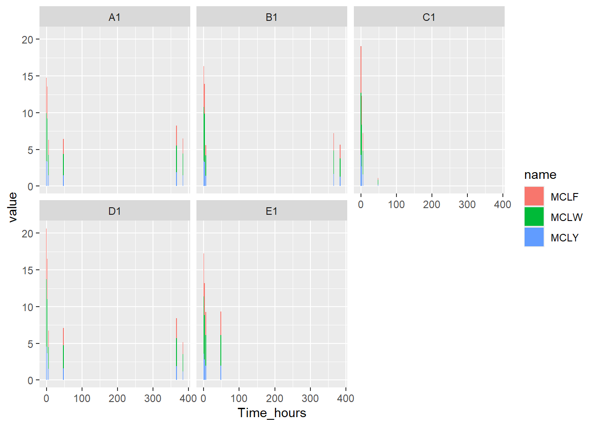
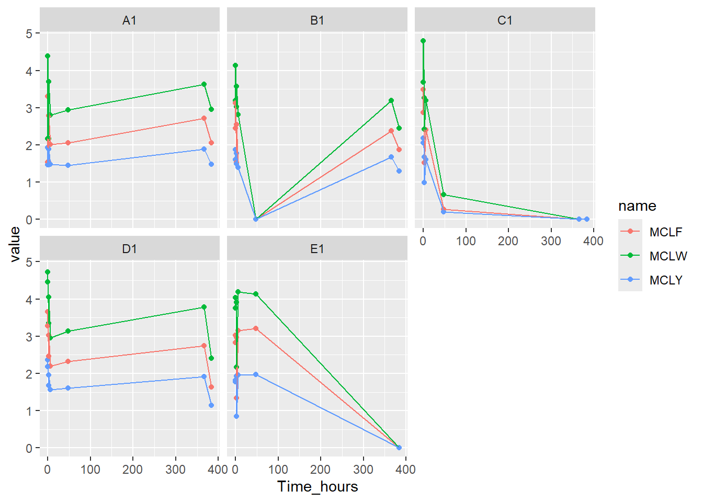

library(tidyverse)Warning: package 'tidyverse' was built under R version 4.4.3── Attaching core tidyverse packages ──────────────────────── tidyverse 2.0.0 ──
✔ dplyr 1.1.4 ✔ readr 2.1.5
✔ forcats 1.0.0 ✔ stringr 1.5.1
✔ ggplot2 3.5.1 ✔ tibble 3.2.1
✔ lubridate 1.9.4 ✔ tidyr 1.3.1
✔ purrr 1.0.4
── Conflicts ────────────────────────────────────────── tidyverse_conflicts() ──
✖ dplyr::filter() masks stats::filter()
✖ dplyr::lag() masks stats::lag()
ℹ Use the conflicted package (<http://conflicted.r-lib.org/>) to force all conflicts to become errorslibrary(dplyr)
toxinas <- read_delim(file = "datostoxinas.csv", delim = ";")Rows: 46 Columns: 18
── Column specification ────────────────────────────────────────────────────────
Delimiter: ";"
chr (18): Nombre, 7D-CYN, ATXA, CYN + 7E-CYN, D-MCLR , D-MCRR + DE-MCRR , H-...
ℹ Use `spec()` to retrieve the full column specification for this data.
ℹ Specify the column types or set `show_col_types = FALSE` to quiet this message.toxinas <- read_delim(
file = "datostoxinas.csv",
delim = ";",
col_type = list(Nombre = "f"),
)
toxinas# A tibble: 46 × 18
Nombre `7D-CYN` ATXA `CYN + 7E-CYN` `D-MCLR ` `D-MCRR + DE-MCRR ` `H-ATXA`
<fct> <chr> <chr> <chr> <chr> <chr> <chr>
1 A1-0 N.D. N.D. N.D. 1.03 <0.040 N.D.
2 A1-2h N.D. N.D. N.D. 1.03 <0.040 N.D.
3 A1-6h N.D. N.D. N.D. 1.13 <0.040 N.D.
4 A1-1 N.D. N.D. N.D. 1.06 <0.040 N.D.
5 A1-14-0h N.D. N.D. N.D. 1.14 <0.040 N.D.
6 A1-14-2h N.D. N.D. N.D. 1.21 <0.040 N.D.
7 A1-14-6h N.D. N.D. N.D. 1.12 <0.040 N.D.
8 A1-15 N.D. N.D. N.D. 0.930 <0.040 N.D.
9 B1-0 N.D. N.D. N.D. 0.910 <0.040 N.D.
10 B1-2h N.D. N.D. N.D. 1.07 <0.040 N.D.
# ℹ 36 more rows
# ℹ 11 more variables: `MC-HILR` <chr>, `MC-HTYR` <chr>, MCLA <chr>,
# `MCLF ` <chr>, MCLR <chr>, MCLW <chr>, MCLY <chr>, MCRR <chr>, MCWR <chr>,
# MCYR <chr>, NOD <chr>str(toxinas)spc_tbl_ [46 × 18] (S3: spec_tbl_df/tbl_df/tbl/data.frame)
$ Nombre : Factor w/ 39 levels "A1-0","A1-2h",..: 1 2 3 4 5 6 7 8 9 10 ...
$ 7D-CYN : chr [1:46] "N.D." "N.D." "N.D." "N.D." ...
$ ATXA : chr [1:46] "N.D." "N.D." "N.D." "N.D." ...
$ CYN + 7E-CYN : chr [1:46] "N.D." "N.D." "N.D." "N.D." ...
$ D-MCLR : chr [1:46] "1.03" "1.03" "1.13" "1.06" ...
$ D-MCRR + DE-MCRR : chr [1:46] "<0.040" "<0.040" "<0.040" "<0.040" ...
$ H-ATXA : chr [1:46] "N.D." "N.D." "N.D." "N.D." ...
$ MC-HILR : chr [1:46] "0.220" "0.220" "0.210" "0.228" ...
$ MC-HTYR : chr [1:46] "N.D." "N.D." "N.D." "N.D." ...
$ MCLA : chr [1:46] "N.D." "N.D." "N.D." "N.D." ...
$ MCLF : chr [1:46] "1.53" "1.53" "2.01" "2.06" ...
$ MCLR : chr [1:46] "33.4 (*)" "33.4 (*)" "34.8 (*)" "33.1 (*)" ...
$ MCLW : chr [1:46] "2.17" "2.17" "2.80" "2.94" ...
$ MCLY : chr [1:46] "1.46" "1.46" "1.48" "1.45" ...
$ MCRR : chr [1:46] "0.416" "0.416" "0.445" "0.408" ...
$ MCWR : chr [1:46] "N.D." "N.D." "N.D." "N.D." ...
$ MCYR : chr [1:46] "0.216" "0.216" "0.227" "0.217" ...
$ NOD : chr [1:46] "N.D." "N.D." "N.D." "N.D." ...
- attr(*, "spec")=
.. cols(
.. Nombre = col_factor(levels = NULL, ordered = FALSE, include_na = FALSE),
.. `7D-CYN` = col_character(),
.. ATXA = col_character(),
.. `CYN + 7E-CYN` = col_character(),
.. `D-MCLR ` = col_character(),
.. `D-MCRR + DE-MCRR ` = col_character(),
.. `H-ATXA` = col_character(),
.. `MC-HILR` = col_character(),
.. `MC-HTYR` = col_character(),
.. MCLA = col_character(),
.. `MCLF ` = col_character(),
.. MCLR = col_character(),
.. MCLW = col_character(),
.. MCLY = col_character(),
.. MCRR = col_character(),
.. MCWR = col_character(),
.. MCYR = col_character(),
.. NOD = col_character()
.. )
- attr(*, "problems")=<externalptr> summary(toxinas) Nombre 7D-CYN ATXA CYN + 7E-CYN
E1-14-6h: 2 Length:46 Length:46 Length:46
A1-0 : 1 Class :character Class :character Class :character
A1-2h : 1 Mode :character Mode :character Mode :character
A1-6h : 1
A1-1 : 1
(Other) :34
NA's : 6
D-MCLR D-MCRR + DE-MCRR H-ATXA MC-HILR
Length:46 Length:46 Length:46 Length:46
Class :character Class :character Class :character Class :character
Mode :character Mode :character Mode :character Mode :character
MC-HTYR MCLA MCLF MCLR
Length:46 Length:46 Length:46 Length:46
Class :character Class :character Class :character Class :character
Mode :character Mode :character Mode :character Mode :character
MCLW MCLY MCRR MCWR
Length:46 Length:46 Length:46 Length:46
Class :character Class :character Class :character Class :character
Mode :character Mode :character Mode :character Mode :character
MCYR NOD
Length:46 Length:46
Class :character Class :character
Mode :character Mode :character
toxinas2 <- toxinas |>
mutate(across(-Nombre, ~ ifelse(.x == "N.D.", 0, .x))) #todos los N.D, son 0
#Entonces [^0-9.]+ significa:
#“uno o más caracteres que no sean dígitos (0–9) ni punto (.)”
#Reemplazo: "" (cadena vacía) → lo borra.
#gsub() = “global substitute” → busca un patrón y lo reemplaza en todas las filas.
toxinas3 <- toxinas2 %>%
mutate(MCLR = as.numeric(gsub("[^0-9.]+", "", MCLR)))
#convertir los datos <al LOQ a 0
#grepl("^<", columna);grepl() revisa cada valor de la columna y devuelve TRUE/FALSE.
#El patrón ^< significa: ^ = “al inicio del texto”, < = el símbolo “menor que”
#Entonces detecta valores que empiezan con <, como "<0.040".
toxinas3 <- toxinas3 |>
mutate(`D-MCRR + DE-MCRR ` = ifelse(grepl("^<", `D-MCRR + DE-MCRR `),
"0",
`D-MCRR + DE-MCRR `)) |>
mutate(`D-MCRR + DE-MCRR ` = as.numeric(`D-MCRR + DE-MCRR `))
names(toxinas3) [1] "Nombre" "7D-CYN" "ATXA"
[4] "CYN + 7E-CYN" "D-MCLR " "D-MCRR + DE-MCRR "
[7] "H-ATXA" "MC-HILR" "MC-HTYR"
[10] "MCLA" "MCLF " "MCLR"
[13] "MCLW" "MCLY" "MCRR"
[16] "MCWR" "MCYR" "NOD" #same but applied for all col
library(dplyr)
# cortar la tabla
toxinas3 <- toxinas3 |>
mutate(across(where(is.character),
~ as.numeric(ifelse(grepl("^<", .x), "0", .x))))
str(toxinas3)tibble [46 × 18] (S3: tbl_df/tbl/data.frame)
$ Nombre : Factor w/ 39 levels "A1-0","A1-2h",..: 1 2 3 4 5 6 7 8 9 10 ...
$ 7D-CYN : num [1:46] 0 0 0 0 0 0 0 0 0 0 ...
$ ATXA : num [1:46] 0 0 0 0 0 0 0 0 0 0 ...
$ CYN + 7E-CYN : num [1:46] 0 0 0 0 0 0 0 0 0 0 ...
$ D-MCLR : num [1:46] 1.03 1.03 1.13 1.06 1.14 1.21 1.12 0.93 0.91 1.07 ...
$ D-MCRR + DE-MCRR : num [1:46] 0 0 0 0 0 0 0 0 0 0 ...
$ H-ATXA : num [1:46] 0 0 0 0 0 0 0 0 0 0 ...
$ MC-HILR : num [1:46] 0.22 0.22 0.21 0.228 0.256 0.237 0.219 0.188 0.19 0.234 ...
$ MC-HTYR : num [1:46] 0 0 0 0 0 0 0 0 0 0 ...
$ MCLA : num [1:46] 0 0 0 0 0 0 0 0 0 0 ...
$ MCLF : num [1:46] 1.53 1.53 2.01 2.06 3.3 2.79 2.71 2.06 2.45 1.52 ...
$ MCLR : num [1:46] 33.4 33.4 34.8 33.1 36.6 36 35.9 28.6 29.8 32.6 ...
$ MCLW : num [1:46] 2.17 2.17 2.8 2.94 4.38 3.7 3.63 2.95 3.19 3.03 ...
$ MCLY : num [1:46] 1.46 1.46 1.48 1.45 1.93 1.89 1.89 1.48 1.61 1.49 ...
$ MCRR : num [1:46] 0.416 0.416 0.445 0.408 0.451 0.433 0.445 0.329 0.394 0.436 ...
$ MCWR : num [1:46] 0 0 0 0 0 0 0 0 0 0 ...
$ MCYR : num [1:46] 0.216 0.216 0.227 0.217 0.23 0.221 0.212 0.18 0.192 0.216 ...
$ NOD : num [1:46] 0 0 0 0 0 0 0 0 0 0 ...toxinas4 <- toxinas3 |>
slice(1:40)
#separar e añadir columnas
toxinas5 <- toxinas4 %>%
rename(Name = Nombre) %>%
group_by(Name) %>%
mutate(
dup_index = row_number()
) %>%
ungroup() %>%
mutate(
# Corrección nominal SOLO para la segunda aparición
Name = if_else(Name == "E1-14-6h" & dup_index == 2, "E1-15", Name),
Group = str_extract(Name, "^[A-E]1"),
Hours = case_when(
Name == "E1-15" ~ 0L,
str_detect(Name, "-(\\d+)h") ~ as.integer(str_extract(Name, "(?<=-)\\d+(?=h)")),
str_detect(Name, "-0$|-1$|-15$") ~ 0L,
TRUE ~ NA_integer_
),
Days = case_when(
Name == "E1-15" ~ 15L,
str_detect(Name, "-0$") ~ 0L,
str_detect(Name, "-14-") ~ 14L,
str_detect(Name, "-15$") ~ 15L,
str_detect(Name, "-1$") ~ 1L,
str_detect(Name, "-(\\d+)h") ~ 1L,
TRUE ~ NA_integer_
)
) %>%
select(Name, Group, Days, Hours, everything(), -dup_index)
library(tidyverse)
library(dplyr)
toxinas <- read_delim(file = "datostoxinas.csv", delim = ";")Rows: 46 Columns: 18
── Column specification ────────────────────────────────────────────────────────
Delimiter: ";"
chr (18): Nombre, 7D-CYN, ATXA, CYN + 7E-CYN, D-MCLR , D-MCRR + DE-MCRR , H-...
ℹ Use `spec()` to retrieve the full column specification for this data.
ℹ Specify the column types or set `show_col_types = FALSE` to quiet this message.toxinas <- read_delim(
file = "datostoxinas.csv",
delim = ";",
col_type = list(Nombre = "f"),
)
toxinas# A tibble: 46 × 18
Nombre `7D-CYN` ATXA `CYN + 7E-CYN` `D-MCLR ` `D-MCRR + DE-MCRR ` `H-ATXA`
<fct> <chr> <chr> <chr> <chr> <chr> <chr>
1 A1-0 N.D. N.D. N.D. 1.03 <0.040 N.D.
2 A1-2h N.D. N.D. N.D. 1.03 <0.040 N.D.
3 A1-6h N.D. N.D. N.D. 1.13 <0.040 N.D.
4 A1-1 N.D. N.D. N.D. 1.06 <0.040 N.D.
5 A1-14-0h N.D. N.D. N.D. 1.14 <0.040 N.D.
6 A1-14-2h N.D. N.D. N.D. 1.21 <0.040 N.D.
7 A1-14-6h N.D. N.D. N.D. 1.12 <0.040 N.D.
8 A1-15 N.D. N.D. N.D. 0.930 <0.040 N.D.
9 B1-0 N.D. N.D. N.D. 0.910 <0.040 N.D.
10 B1-2h N.D. N.D. N.D. 1.07 <0.040 N.D.
# ℹ 36 more rows
# ℹ 11 more variables: `MC-HILR` <chr>, `MC-HTYR` <chr>, MCLA <chr>,
# `MCLF ` <chr>, MCLR <chr>, MCLW <chr>, MCLY <chr>, MCRR <chr>, MCWR <chr>,
# MCYR <chr>, NOD <chr>str(toxinas)spc_tbl_ [46 × 18] (S3: spec_tbl_df/tbl_df/tbl/data.frame)
$ Nombre : Factor w/ 39 levels "A1-0","A1-2h",..: 1 2 3 4 5 6 7 8 9 10 ...
$ 7D-CYN : chr [1:46] "N.D." "N.D." "N.D." "N.D." ...
$ ATXA : chr [1:46] "N.D." "N.D." "N.D." "N.D." ...
$ CYN + 7E-CYN : chr [1:46] "N.D." "N.D." "N.D." "N.D." ...
$ D-MCLR : chr [1:46] "1.03" "1.03" "1.13" "1.06" ...
$ D-MCRR + DE-MCRR : chr [1:46] "<0.040" "<0.040" "<0.040" "<0.040" ...
$ H-ATXA : chr [1:46] "N.D." "N.D." "N.D." "N.D." ...
$ MC-HILR : chr [1:46] "0.220" "0.220" "0.210" "0.228" ...
$ MC-HTYR : chr [1:46] "N.D." "N.D." "N.D." "N.D." ...
$ MCLA : chr [1:46] "N.D." "N.D." "N.D." "N.D." ...
$ MCLF : chr [1:46] "1.53" "1.53" "2.01" "2.06" ...
$ MCLR : chr [1:46] "33.4 (*)" "33.4 (*)" "34.8 (*)" "33.1 (*)" ...
$ MCLW : chr [1:46] "2.17" "2.17" "2.80" "2.94" ...
$ MCLY : chr [1:46] "1.46" "1.46" "1.48" "1.45" ...
$ MCRR : chr [1:46] "0.416" "0.416" "0.445" "0.408" ...
$ MCWR : chr [1:46] "N.D." "N.D." "N.D." "N.D." ...
$ MCYR : chr [1:46] "0.216" "0.216" "0.227" "0.217" ...
$ NOD : chr [1:46] "N.D." "N.D." "N.D." "N.D." ...
- attr(*, "spec")=
.. cols(
.. Nombre = col_factor(levels = NULL, ordered = FALSE, include_na = FALSE),
.. `7D-CYN` = col_character(),
.. ATXA = col_character(),
.. `CYN + 7E-CYN` = col_character(),
.. `D-MCLR ` = col_character(),
.. `D-MCRR + DE-MCRR ` = col_character(),
.. `H-ATXA` = col_character(),
.. `MC-HILR` = col_character(),
.. `MC-HTYR` = col_character(),
.. MCLA = col_character(),
.. `MCLF ` = col_character(),
.. MCLR = col_character(),
.. MCLW = col_character(),
.. MCLY = col_character(),
.. MCRR = col_character(),
.. MCWR = col_character(),
.. MCYR = col_character(),
.. NOD = col_character()
.. )
- attr(*, "problems")=<externalptr> summary(toxinas) Nombre 7D-CYN ATXA CYN + 7E-CYN
E1-14-6h: 2 Length:46 Length:46 Length:46
A1-0 : 1 Class :character Class :character Class :character
A1-2h : 1 Mode :character Mode :character Mode :character
A1-6h : 1
A1-1 : 1
(Other) :34
NA's : 6
D-MCLR D-MCRR + DE-MCRR H-ATXA MC-HILR
Length:46 Length:46 Length:46 Length:46
Class :character Class :character Class :character Class :character
Mode :character Mode :character Mode :character Mode :character
MC-HTYR MCLA MCLF MCLR
Length:46 Length:46 Length:46 Length:46
Class :character Class :character Class :character Class :character
Mode :character Mode :character Mode :character Mode :character
MCLW MCLY MCRR MCWR
Length:46 Length:46 Length:46 Length:46
Class :character Class :character Class :character Class :character
Mode :character Mode :character Mode :character Mode :character
MCYR NOD
Length:46 Length:46
Class :character Class :character
Mode :character Mode :character
toxinas2 <- toxinas |>
mutate(across(-Nombre, ~ ifelse(.x == "N.D.", 0, .x))) #todos los N.D, son 0
#Entonces [^0-9.]+ significa:
#“uno o más caracteres que no sean dígitos (0–9) ni punto (.)”
#Reemplazo: "" (cadena vacía) → lo borra.
#gsub() = “global substitute” → busca un patrón y lo reemplaza en todas las filas.
toxinas3 <- toxinas2 %>%
mutate(MCLR = as.numeric(gsub("[^0-9.]+", "", MCLR)))
#convertir los datos <al LOQ a 0
#grepl("^<", columna);grepl() revisa cada valor de la columna y devuelve TRUE/FALSE.
#El patrón ^< significa: ^ = “al inicio del texto”, < = el símbolo “menor que”
#Entonces detecta valores que empiezan con <, como "<0.040".
toxinas3 <- toxinas3 |>
mutate(`D-MCRR + DE-MCRR ` = ifelse(grepl("^<", `D-MCRR + DE-MCRR `),
"0",
`D-MCRR + DE-MCRR `)) |>
mutate(`D-MCRR + DE-MCRR ` = as.numeric(`D-MCRR + DE-MCRR `))
names(toxinas3) [1] "Nombre" "7D-CYN" "ATXA"
[4] "CYN + 7E-CYN" "D-MCLR " "D-MCRR + DE-MCRR "
[7] "H-ATXA" "MC-HILR" "MC-HTYR"
[10] "MCLA" "MCLF " "MCLR"
[13] "MCLW" "MCLY" "MCRR"
[16] "MCWR" "MCYR" "NOD" #same but applied for all col
library(dplyr)
# cortar la tabla
toxinas3 <- toxinas3 |>
mutate(across(where(is.character),
~ as.numeric(ifelse(grepl("^<", .x), "0", .x))))
str(toxinas3)tibble [46 × 18] (S3: tbl_df/tbl/data.frame)
$ Nombre : Factor w/ 39 levels "A1-0","A1-2h",..: 1 2 3 4 5 6 7 8 9 10 ...
$ 7D-CYN : num [1:46] 0 0 0 0 0 0 0 0 0 0 ...
$ ATXA : num [1:46] 0 0 0 0 0 0 0 0 0 0 ...
$ CYN + 7E-CYN : num [1:46] 0 0 0 0 0 0 0 0 0 0 ...
$ D-MCLR : num [1:46] 1.03 1.03 1.13 1.06 1.14 1.21 1.12 0.93 0.91 1.07 ...
$ D-MCRR + DE-MCRR : num [1:46] 0 0 0 0 0 0 0 0 0 0 ...
$ H-ATXA : num [1:46] 0 0 0 0 0 0 0 0 0 0 ...
$ MC-HILR : num [1:46] 0.22 0.22 0.21 0.228 0.256 0.237 0.219 0.188 0.19 0.234 ...
$ MC-HTYR : num [1:46] 0 0 0 0 0 0 0 0 0 0 ...
$ MCLA : num [1:46] 0 0 0 0 0 0 0 0 0 0 ...
$ MCLF : num [1:46] 1.53 1.53 2.01 2.06 3.3 2.79 2.71 2.06 2.45 1.52 ...
$ MCLR : num [1:46] 33.4 33.4 34.8 33.1 36.6 36 35.9 28.6 29.8 32.6 ...
$ MCLW : num [1:46] 2.17 2.17 2.8 2.94 4.38 3.7 3.63 2.95 3.19 3.03 ...
$ MCLY : num [1:46] 1.46 1.46 1.48 1.45 1.93 1.89 1.89 1.48 1.61 1.49 ...
$ MCRR : num [1:46] 0.416 0.416 0.445 0.408 0.451 0.433 0.445 0.329 0.394 0.436 ...
$ MCWR : num [1:46] 0 0 0 0 0 0 0 0 0 0 ...
$ MCYR : num [1:46] 0.216 0.216 0.227 0.217 0.23 0.221 0.212 0.18 0.192 0.216 ...
$ NOD : num [1:46] 0 0 0 0 0 0 0 0 0 0 ...toxinas4 <- toxinas3 |>
slice(1:40)
#separar e añadir columnas
toxinas5 <- toxinas4 %>%
rename(Name = Nombre) %>% # Renombramos la columna
# Corrección específica para la segunda aparición
mutate(Name = if_else(Name == "E1-14-6h", "E1-15", Name)) %>%
# Extraemos Group y creamos Day y Hour según reglas
mutate(
Group = str_extract(Name, "^[A-E]1"),
# Horas
Hours = case_when(
str_detect(Name, "-0$") ~ 0L,
str_detect(Name, "-1$") ~ 24L,
str_detect(Name, "-15$") ~ 24L,
str_detect(Name, "-\\d+h$") ~ as.integer(str_extract(Name, "(?<=-)\\d+(?=h)")),
TRUE ~ NA_integer_
),
# Días
Days = case_when(
str_detect(Name, "-0$") ~ 0L,
str_detect(Name, "-1$") ~ 1L,
str_detect(Name, "-15$") ~ 15L,
str_detect(Name, "-14-6h$") ~ 15L, # caso especial E1-15
str_detect(Name, "-\\d+h$") ~ 0L, # horas 0-6 ahora son día 0
TRUE ~ NA_integer_
),
# Tiempo total en horas
Time_hours = Days * 24 + Hours
) %>%
# Reordenamos columnas para que los tratamientos estén al inicio
select(Name, Group, Days, Hours, Time_hours, everything())
toxinas5 |>
mutate(across(c(Days), as.numeric))# A tibble: 40 × 22
Name Group Days Hours Time_hours `7D-CYN` ATXA `CYN + 7E-CYN` `D-MCLR `
<chr> <chr> <dbl> <int> <dbl> <dbl> <dbl> <dbl> <dbl>
1 A1-0 A1 0 0 0 0 0 0 1.03
2 A1-2h A1 0 2 2 0 0 0 1.03
3 A1-6h A1 0 6 6 0 0 0 1.13
4 A1-1 A1 1 24 48 0 0 0 1.06
5 A1-14-0h A1 0 0 0 0 0 0 1.14
6 A1-14-2h A1 0 2 2 0 0 0 1.21
7 A1-14-6h A1 15 6 366 0 0 0 1.12
8 A1-15 A1 15 24 384 0 0 0 0.93
9 B1-0 B1 0 0 0 0 0 0 0.91
10 B1-2h B1 0 2 2 0 0 0 1.07
# ℹ 30 more rows
# ℹ 13 more variables: `D-MCRR + DE-MCRR ` <dbl>, `H-ATXA` <dbl>,
# `MC-HILR` <dbl>, `MC-HTYR` <dbl>, MCLA <dbl>, `MCLF ` <dbl>, MCLR <dbl>,
# MCLW <dbl>, MCLY <dbl>, MCRR <dbl>, MCWR <dbl>, MCYR <dbl>, NOD <dbl>str(toxinas5)tibble [40 × 22] (S3: tbl_df/tbl/data.frame)
$ Name : chr [1:40] "A1-0" "A1-2h" "A1-6h" "A1-1" ...
$ Group : chr [1:40] "A1" "A1" "A1" "A1" ...
$ Days : int [1:40] 0 0 0 1 0 0 15 15 0 0 ...
$ Hours : int [1:40] 0 2 6 24 0 2 6 24 0 2 ...
$ Time_hours : num [1:40] 0 2 6 48 0 2 366 384 0 2 ...
$ 7D-CYN : num [1:40] 0 0 0 0 0 0 0 0 0 0 ...
$ ATXA : num [1:40] 0 0 0 0 0 0 0 0 0 0 ...
$ CYN + 7E-CYN : num [1:40] 0 0 0 0 0 0 0 0 0 0 ...
$ D-MCLR : num [1:40] 1.03 1.03 1.13 1.06 1.14 1.21 1.12 0.93 0.91 1.07 ...
$ D-MCRR + DE-MCRR : num [1:40] 0 0 0 0 0 0 0 0 0 0 ...
$ H-ATXA : num [1:40] 0 0 0 0 0 0 0 0 0 0 ...
$ MC-HILR : num [1:40] 0.22 0.22 0.21 0.228 0.256 0.237 0.219 0.188 0.19 0.234 ...
$ MC-HTYR : num [1:40] 0 0 0 0 0 0 0 0 0 0 ...
$ MCLA : num [1:40] 0 0 0 0 0 0 0 0 0 0 ...
$ MCLF : num [1:40] 1.53 1.53 2.01 2.06 3.3 2.79 2.71 2.06 2.45 1.52 ...
$ MCLR : num [1:40] 33.4 33.4 34.8 33.1 36.6 36 35.9 28.6 29.8 32.6 ...
$ MCLW : num [1:40] 2.17 2.17 2.8 2.94 4.38 3.7 3.63 2.95 3.19 3.03 ...
$ MCLY : num [1:40] 1.46 1.46 1.48 1.45 1.93 1.89 1.89 1.48 1.61 1.49 ...
$ MCRR : num [1:40] 0.416 0.416 0.445 0.408 0.451 0.433 0.445 0.329 0.394 0.436 ...
$ MCWR : num [1:40] 0 0 0 0 0 0 0 0 0 0 ...
$ MCYR : num [1:40] 0.216 0.216 0.227 0.217 0.23 0.221 0.212 0.18 0.192 0.216 ...
$ NOD : num [1:40] 0 0 0 0 0 0 0 0 0 0 ...toxinas_long <- toxinas5 |> select(c(Time_hours, Group,`MCLF `, MCLW, MCLY)) |>
pivot_longer(cols = c(`MCLF `, MCLW, MCLY))
ggplot(data = toxinas_long) +
geom_col(aes(x = Time_hours, y =value, fill=name))+
facet_wrap("Group")
ggplot(data = toxinas_long) +
geom_point(aes(x = Time_hours, y =value, color=name))+
geom_line(aes(x = Time_hours, y =value, color=name))+
facet_wrap("Group")